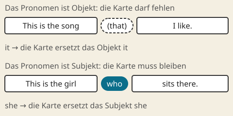

Das Buch, das ich gelesen habe: die Karte darf fehlen
Mit einem KI-Tutor lernen
Ein KI-Tutor erklärt dir diese Seite und hilft dir bei den Aufgaben. Wähl deinen Assistenten:
Mit Claude öffnen Mit ChatGPT öffnen Mit Mistral Vibe öffnen
Du nutzt dein eigenes Konto beim Anbieter. Der Assistent ist kein Angebot von lernapps.net: lernapps liefert nur Inhalte und Aufgaben. Die Wahl gilt für alle Seiten, nur auf diesem Gerät.
Was ersetzt die Relativkarte?
Ellie, Amir und Sophie schreiben sich abends Nachrichten. Du liest gleich ihren Chat. Davor eine Frage zu den Relativkarten von Kapitel 1.
Aufgabe
Lösung
her, ein Besitzwort
Her gehört zu whose.
London, einen Ort
London bleibt stehen. Die Karte ersetzt nur das Pronomen.
she, die Person, die etwas tut richtige Antwort
Aus „She lives in London“ wird „who lives in London“. Who ersetzt das Pronomen she, das Subjekt, also das Wort, das etwas tut.
Die Relativkarte ersetzt das Pronomen des zweiten Streifens.
Das kannst du danach: Du bildest Relativsätze ohne who, which oder that, wenn das möglich ist, und du weißt, wann die Karte stehen muss.
Der Chat der Gruppe
Die drei schreiben über ein Buch, das Sophie an Amir verliehen hat. Jede Nachricht hat eine Nummer. Mit der Nummer kannst du später sagen, wo etwas steht. Beim Lesen: Achte auf Nachrichten mit einem Nomen und direkt dahinter einem Subjekt (the book I lent) und auf solche mit who.
| Nr | Wer | Nachricht |
|---|---|---|
| 1 | Sophie | Did you finish the book I lent you, Amir? |
| 2 | Amir | Yes! It's the best book I've read this year. |
| 3 | Ellie | Which book? The one about the girl who sails around the world? |
| 4 | Sophie | No, the one Mr Hill recommended on Monday. |
| Englisch | Deutsch |
|---|---|
| lend / lent | verleihen / verliehen |
| sail | segeln |
| recommend | empfehlen |
| Nr | Wer | Nachricht |
|---|---|---|
| 5 | Amir | The main character is a boy who lives in a lighthouse. The story he tells at the end is amazing. |
| 6 | Ellie | I want to read it too. Can I borrow the copy you have? |
| 7 | Amir | Sure! But the film they made isn't very good. |
| 8 | Sophie | I know. The actor they chose is too old. |
| Englisch | Deutsch |
|---|---|
| main character | Hauptfigur |
| lighthouse | Leuchtturm |
| copy | Exemplar |
| borrow | sich ausleihen |
| actor | Schauspieler / Schauspielerin |
| chose / choose | wählte / wählen |
| Nr | Wer | Nachricht |
|---|---|---|
| 9 | Ellie | Then I'll only read the book. The film I see in my head is better. |
| 10 | Sophie | Same! The best films I know were books first. |
| 11 | Amir | Let's meet on Saturday. The café we found last week is open then. |
| 12 | Ellie | Great! I'll bring the snacks I bought at the shop. |
| Englisch | Deutsch |
|---|---|
| Same! | Geht mir genauso! |
| snacks | kleine Sachen zum Essen |
Objekt oder Subjekt?
Schau in den Chat. In Nachricht 2 steht „the best book I’ve read“, ohne that und ohne which. Zwei Wörter vorweg: Das Subjekt ist das Wort, das etwas tut (I, she). Das Objekt ist das Wort, mit dem etwas getan wird (it, them). Fast jede Nachricht hat so einen Satz ohne Karte; nur Nachricht 3 hat keinen. Mit Karte stehen nur die who-Sätze in 3 und 5. Der zweite Streifen „I’ve read it“ hat ein Objekt, das Wort it. Die Relativkarte hat it ersetzt. Weil hinter der Karte schon ein Subjekt steht (I), versteht man den Satz auch ohne Karte. Das ist ein Relativsatz ohne Relativkarte (Fachwort: Relativpronomen), auch Kontaktsatz oder englisch contact clause genannt.

© CC-BY-4.0Gestrichelt und in Klammern heißt: Die Karte darf fehlen. Oben ersetzt sie das Objekt it. Unten ersetzt who das Subjekt she, die Karte muss bleiben.
| Streifen | Die Karte ersetzt | Die Karte |
|---|---|---|
| The film (that) we saw | Objekt (we saw it) | darf fehlen |
| The girl who sits there | Subjekt (she sits) | muss bleiben |
| The song (which) you sent | Objekt (you sent it) | darf fehlen |
Merke
Steht hinter der Karte schon ein Subjekt, darf die Karte fehlen. Es heißt „the book I read“, aber „the boy who sings“. Nicht „the book I read it“. Whose bleibt immer: „the boy whose phone is new“. Nicht verwechseln: Die that-Karte aus Kapitel 1 verbindet einen Gedanken („I think that …“), diese Karte beschreibt ein Nomen („the book that I read“).
Übung
Aufgabe
Lösung
Der Film zum Buch ist nicht sehr gut. richtige Antwort
Amir schreibt: „isn’t very good“.
Der Film ist besser als das Buch.
Das sagt niemand im Chat.
Der Film ist noch nicht fertig.
Davon steht nichts im Chat.
Der Film ist nicht sehr gut.
Aufgabe
Lösung
Richtige Antwort: 12
In Nachricht 12 bringt Ellie Snacks mit.
Aufgabe
Lösung
The pasta (which) Amir made was great richtige Antwort
Which ersetzt das Objekt it (Amir made it).
The shirt (that) Ellie wears is new richtige Antwort
That ersetzt das Objekt it (Ellie wears it).
The girl (who) lives next door is nice
Who ersetzt das Subjekt she.
The bus (that) goes to school is late
That ersetzt das Subjekt it.
Die Karte darf fehlen, wenn sie ein Objekt ersetzt.
Aufgabe
Hänge die zwei Streifen aneinander. Du darfst die Karte weglassen, wenn es geht. Muss sie stehen, schreibe sie selbst. Das Pronomen fällt weg.
Tipp
Welches Wort ersetzt die Karte?
- Here is the hat · Ellie bought it
- This is the boy · he won the game
- She likes the picture · I made it
Lösung
- Here is the hat that Ellie bought. (auch richtig: Here is the hat which Ellie bought.; Here is the hat Ellie bought.; Here's the hat that Ellie bought.; Here's the hat which Ellie bought.; Here's the hat Ellie bought.)
- This is the boy who won the game. (auch richtig: This is the boy that won the game.)
- She likes the picture that I made. (auch richtig: She likes the picture which I made.; She likes the picture I made.)
Aufgabe
Übersetze den Satz. Du darfst die Karte weglassen, wenn es geht.
Tipp
Du kannst das simple past oder das present perfect benutzen.
- Die Tasche, die ich gekauft habe, ist grün.
- Die Leute, die wir getroffen haben, waren nett.
Lösung
- The bag that I bought is green. (auch richtig: The bag that I have bought is green.; The bag that I've bought is green.; The bag that I got is green.; The bag that I have got is green.; The bag that I've got is green.; The bag which I bought is green.; The bag which I have bought is green.; The bag which I've bought is green.; The bag which I got is green.; The bag which I have got is green.; The bag which I've got is green.; The bag I bought is green.; The bag I have bought is green.; The bag I've bought is green.; The bag I got is green.; The bag I have got is green.; The bag I've got is green.)
- The people who we met were really nice. (auch richtig: The people who we met were really kind.; The people who we met were really friendly.; The people who we met were nice.; The people who we met were kind.; The people who we met were friendly.; The people who we have met were really nice.; The people who we have met were really kind.; The people who we have met were really friendly.; The people who we have met were nice.; The people who we have met were kind.; The people who we have met were friendly.; The people who we've met were really nice.; The people who we've met were really kind.; The people who we've met were really friendly.; The people who we've met were nice.; The people who we've met were kind.; The people who we've met were friendly.; The people that we met were really nice.; The people that we met were really kind.; The people that we met were really friendly.; The people that we met were nice.; The people that we met were kind.; The people that we met were friendly.; The people that we have met were really nice.; The people that we have met were really kind.; The people that we have met were really friendly.; The people that we have met were nice.; The people that we have met were kind.; The people that we have met were friendly.; The people that we've met were really nice.; The people that we've met were really kind.; The people that we've met were really friendly.; The people that we've met were nice.; The people that we've met were kind.; The people that we've met were friendly.; The people we met were really nice.; The people we met were really kind.; The people we met were really friendly.; The people we met were nice.; The people we met were kind.; The people we met were friendly.; The people we have met were really nice.; The people we have met were really kind.; The people we have met were really friendly.; The people we have met were nice.; The people we have met were kind.; The people we have met were friendly.; The people we've met were really nice.; The people we've met were really kind.; The people we've met were really friendly.; The people we've met were nice.; The people we've met were kind.; The people we've met were friendly.)
Aufgabe
Hör zu und schreibe, was du hörst.
- KI
- KI
- KI
Lösung
- The video you sent me is really funny.
- I lost the key my mother gave me.
- The teacher I like best is Mr Hill.
Selbst sagen und schreiben
Aufgabe
Hör zu, sprich nach und nimm dich auf. Vergleiche dann mit dem Original.
Tipp
Hör den Satz zuerst. Sprich dann langsam nach. Mach zwischen dem Nomen und dem Relativsatz keine Pause.
- The woman we asked was very helpful.KI
- Where is the ticket I bought yesterday?KI
- The cake we ate on Sunday was great.KI
Zum Aufnehmen braucht diese Aufgabe JavaScript. Die Beispiele kannst du auch ohne anhören.
Lösung
- The woman we asked was very helpful.
- Where is the ticket I bought yesterday?
- The cake we ate on Sunday was great.
Offene Aufgabe
Schreibe eine Nachricht an die Gruppe. Sage deine Meinung: Ist ein Buch oft besser als der Film dazu? Nenne ein Buch oder einen Film und benutze mindestens einen Relativsatz ohne Relativkarte.
Tipp
Du kannst mit „I think …“ beginnen.
Eine gute Antwort enthält:
Lösung
I think the book is better than the film. The film about the lighthouse boy is not as good as the book I read.
Wie es weitergeht
Am Abend schreibt Sophie in ihr Tagebuch. Dabei fügt sie Nebensätze ein, die man herausnehmen kann. Auf der nächsten Seite siehst du, wie man sie mit Kommas abtrennt.
Fehler gefunden oder eine Idee für diese App?